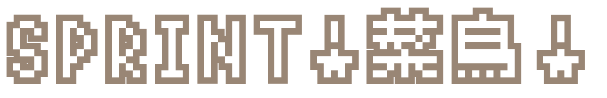
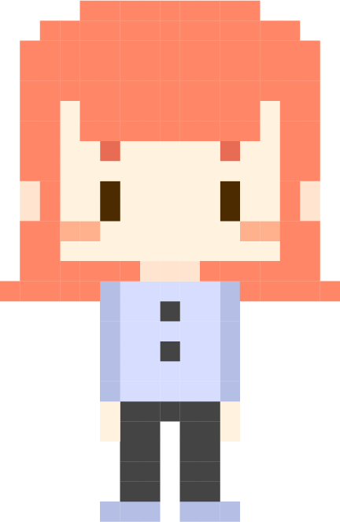
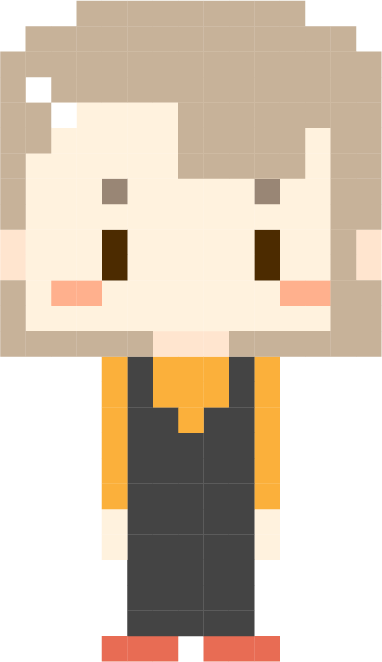
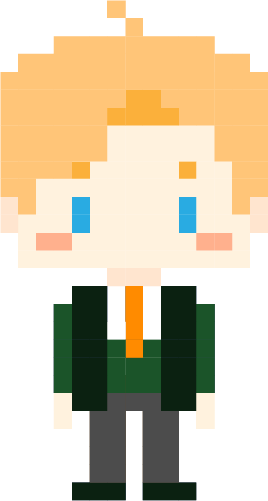
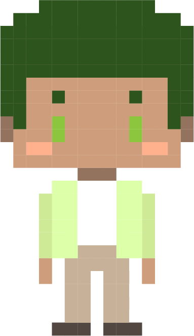
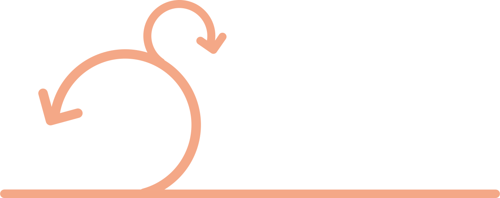

© The F2E 4th｜Code: 威爾 / Design: 小菜

- 
- 
- 
- 
？？？
請點選代表你的角色。
？？？
小敏
請把需求放進產品代辦清單，並調整代辦的優先度順序。公司也推薦使用 來做任務的管理喔。
產品代辦清單 ProductBacklog
會員系統(登入、註冊、權限管理)
應徵者的線上履歷編輯器
前台職缺列表(職缺詳細內容、點選可發送應徵意願)
後台職缺管理功能(資訊上下架、顯示應徵者資料)
優先度高 north
優先度低 south
小敏
小敏
小捷
小斯
小凱
小捷
小斯
小凱
請將產品待辦清單中的項目拖曳到短衝清單。 (20點內)
產品待辦清單 ProductBacklog
優先度高 north
優先度低 south
開發 A 組的短衝待辦清單
/ 20 點
點數已超出上限，請移除一些項目
小捷
小斯
小斯
小斯
小斯
在這經典的 Scrum 流程圖中，這些流程分別代表哪一個會議呢？請把對應的流程拖曳到正確位置。
Scrum 流程圖

Sprint
短衝檢視會議 Sprint Review
短衝自省會議 Sprint Retrospective
每日站立會議 (Daily Scrum)
小斯
小凱
重點在於「正面表述」，你也思考看看，哪一些是適合 Retro 的回饋吧！
做得好的地方
有哪些可以做得更好？
小凱
小凱